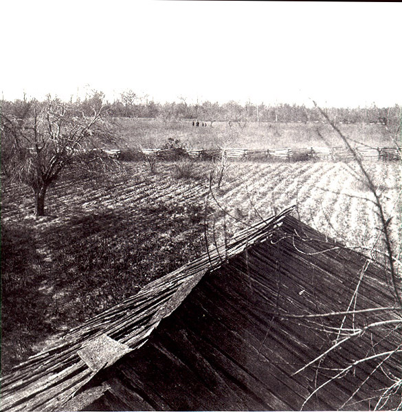
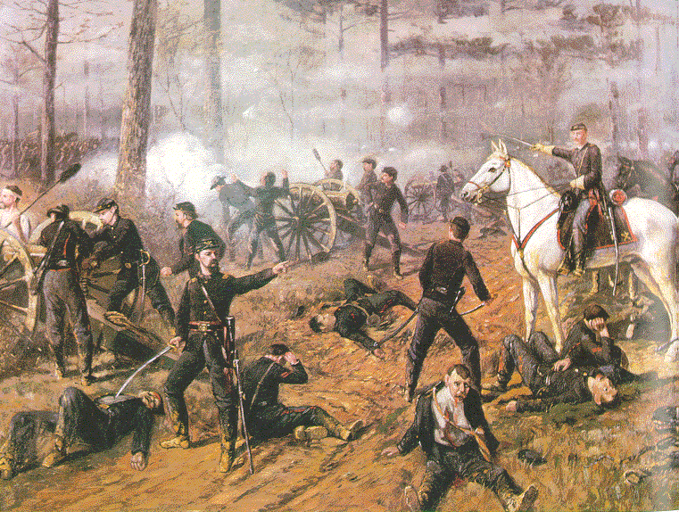

"From the landing a dirt road ran through a deep ravine in the bluffs, to the country back of the river, the soil of which is still, tenacious clay almost impervious to water. There were none but dirt roads which, in wet weather, became almost impassable and which were at all times utterly so for heavy hauling. The country was thickly overgrown with timber, full of dense underbrush. There were a number of clearings under cultivation. About two and one-half miles from the landing stood the small log meeting house called Shiloh church, from which the battle took its name."
-From Sgt. John Obreiter's regimental history

"The soilders from the 77th Regiment of Pennsylvania intended from the beginning to fight the war to a finish, and we could easily foresee that there was many another fierce and desperate battle to be fought; many other long and toilsome march to be made(we had already marched from Louisville, Ky., to this place); many another night of shelterless explosure to cold and snow and rain to be endured, and many thousands of other appalling danders to be encountered before our country could be freed from its awful peril. Such was the outlook on the last day of the great Battle of Shiloh."
- Excerpt taken from Thos. E. Rose's speech at the dedication of the monument at Shilo from Sgt. John Obreiter's regimantal history
"This was a battle of the hour, that is, it was not thought out beforehand."
-From William L. Woodcock's speech at the dedication of the Shiloh monument from Sgt. John Obreiter's regimental history